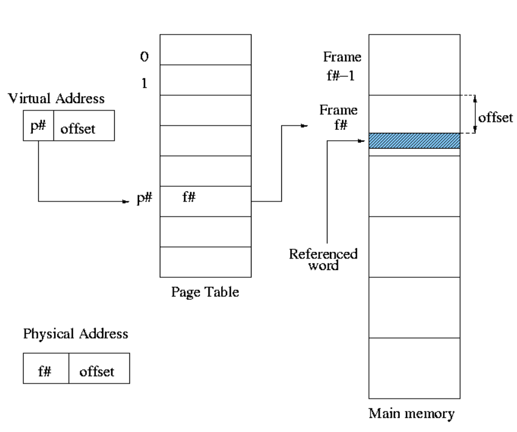
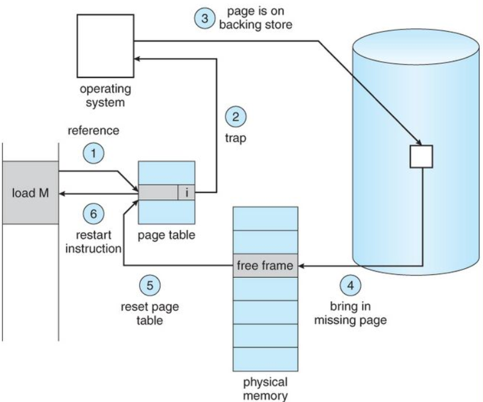
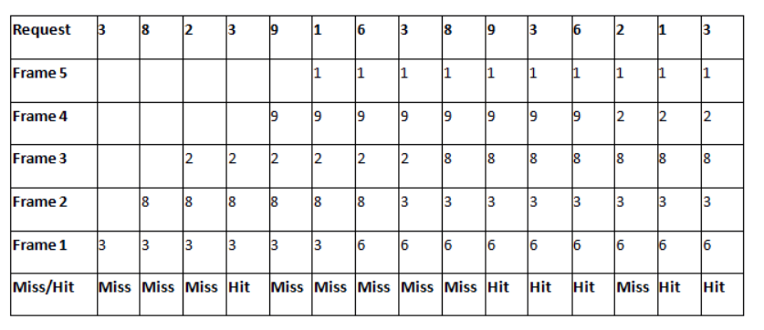
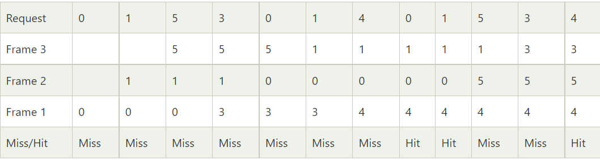
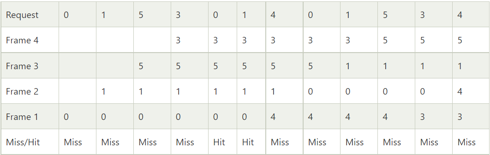
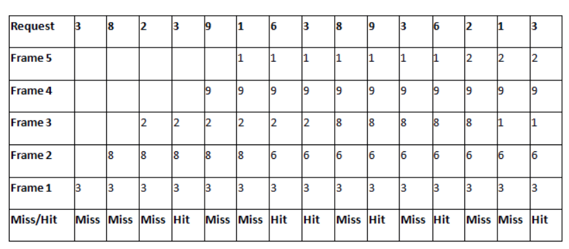
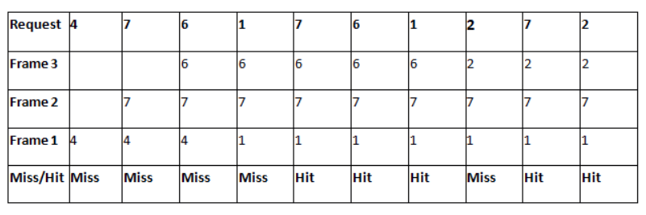

Some Definitions:
-
Logical address:
It is the address generated by the CPU when the program is running. As it doesn’t exist physically, it
is also called a s virtual address. It can also be defined as the address space perceived to be physical
address by the operating system. The set of all logical address generated is called logical address
space.
-
Physical Address:
Identifies a physical location of required data in the main memory. The user never directly deals with
the physical address but can access by its corresponding logical address. The user program generates the
logical address and thinks that the program is running in this logical address but the program needs
physical memory for its execution. The corresponding physical address set generated by all logical
address forms the physical address space.
The logical address must be mapped to the physical address before its usage.
-
Memory Management Unit:
The MMU converts the logical address to its appropriate physical address.
-
Page:
The logical address space is divided into fixed length blocks called pages. Each process is thus divided
into pages.
-
Frames:
The physical address space is divided into fixed length blocks called frames. The size of a page is
always equal to the size of a frame.
-
Paging:
It is a storage mechanism that allows OS to retrieve processes from the secondary storage into the main
memory in the form of pages. In the Paging method, the main memory is divided into frames. The size of a
frame should be kept the same as that of a page to have maximum utilization of the main memory and to
avoid external fragmentation. Paging is used for faster access to data, and it is a logical concept.
Some pages are stored in frames in the main memory while others are stored in the secondary memory in
the form of frames.
-
Page faults:
A page fault happens when a running program accesses a memory page that is mapped into the virtual
address space but not loaded in physical memory. Since actual physical memory is much smaller than
virtual memory, page faults occur. In case of a page fault, OS might have to replace one of the existing
pages (victim page) with the needed page. Different page replacement algorithms suggest different ways
to decide which page is the victim page. The target for all algorithms is to reduce the number of page
faults.

Page fault handling:
The following are the sequence of events that take place in the computer when a page fault occurs:
-
The computer hardware traps to the kernel and program counter (PC) is saved on the stack. Current
instruction state information is saved in CPU registers.
-
An assembly program is started to save the general registers and other volatile information to keep the
OS from destroying it.
-
Operating system finds that a page fault has occurred and tries to find out which virtual page is
needed. Sometimes hardware register contains this required information. If not, the operating system
must retrieve PC, fetch instruction and find out what it was doing when the fault occurred.
-
Once virtual address caused page fault is known, system checks to see if address is valid and checks if
there is no protection access problem.
-
If the virtual address is valid, the system checks to see if a page frame is free. If no frames are
free, the page replacement algorithm is run to remove a page.
-
If frame selected is dirty, page is scheduled for transfer to disk, context switch takes place, fault
process is suspended and another process is made to run until disk transfer is completed.
-
As soon as page frame is clean, operating system looks up disk address where needed page is, schedules
disk operation to bring it in.
-
When disk interrupt indicates page has arrived, page tables are updated to reflect its position, and
frame marked as being in normal state.
-
Faulting instruction is backed up to state it had when it began and PC is reset. Faulting is scheduled,
operating system returns to routine that called it.
-
Assembly Routine reloads register and other state information, returns to user space to continue
execution.

First-In-First-Out (FIFO) Algorithm:
-
This is the simplest page replacement algorithm. In this algorithm, the operating system keeps track of
all
pages in the memory in a queue, the oldest page is in the front of the queue. When a page needs to be
replaced page in the front of the queue is selected for removal.
-
Example:
Consider the below table with five frames and requests as shown in figure. The pages which enter the
frame list first become the victim page during a page fault/miss.
Number of Page Faults = 9
Number of hits = 6

-
Belady’s Anomaly:
Belady’s anomaly proves that it is possible to have more page faults when increasing the number of page
frames while using the First in First Out (FIFO) page replacement algorithm or any other non-stack-based
algorithm. Consider the following FIFO algorithm example with three frames: -

Number of page faults with three frames=9.
Now consider the same example with four frames: -

Number of page faults with four frames=10.
The number of page faults increases even though the number of frames was increased. This is due to
Belady’s anomaly.
-
Stack-based algorithm:
A stack-based algorithm is one for which it can be shown that the set of pages in memory for N frames is
always a subset of the set of pages that would be in memory with N+1 frames. FIFO is a non-stack-based
algorithm.
-
Advantages of FIFO algorithm:
-
It is simple and easy to understand & implement.
-
It is efficiently used for small systems.
-
It does not cause more overhead.
-
Disadvantages of FIFO algorithm:
-
The process effectiveness is low.
-
When we increase the number of frames while using FIFO, we are giving more memory to processes.
So, page fault should decrease, but here the page faults are increasing. This problem is called
as Belady’s Anomaly.
Least Recently Used (LRU) algorithm:
-
In this algorithm, victim page will be the page which is least recently used.
-
LRU algorithm is a stack-based algorithm because for LRU replacement, the set of pages in memory would
be the n most recently referenced pages. If the number of frames increases then these n pages will still
be the most recently referenced and so, will still be in the memory.
-
Consider the following LRU algorithm example with 5 frames and the page request stream as follows: -
Number of Page Faults=9.
Number of Page hits=6.

-
Advantages of LRU algorithm:
-
It is open for full analysis.
-
In this, we replace the page which is least recently used, thus free from Belady’s Anomaly.
-
Easy to choose page which has faulted and hasn’t been used for a long time.
-
Disadvantages of LRU algorithm:
-
It requires additional Data Structure to be implemented.
-
Hardware assistance is high.
-
In LRU error detection is difficult as compared to other algorithms.
-
It has limited acceptability.
Optimal algorithm:
-
In this algorithm, pages are replaced which would not be used for the longest duration of time in the
future.
-
Optimal algorithm is a stack based algorithm because the n frames containing the pages that would not be
used for the longest duration of time in the future will always by definition be a subset of the n+1
pages would not be used for the longest duration of time in the future for a particular instant of time.
-
Consider the following optimal algorithm example with four frames and page request stream as shown
below:
Number of page faults=5.
Number of page hits=5.

-
Advantages of optimal algorithm:
-
Complexity is less and easy to implement.
-
Assistance needed is low i.e Data Structure used are easy and light.
-
Disadvantages of optimal algorithm:
-
OPR is perfect, but not possible in practice as the operating system cannot know future
requests.
-
Error handling is tough.